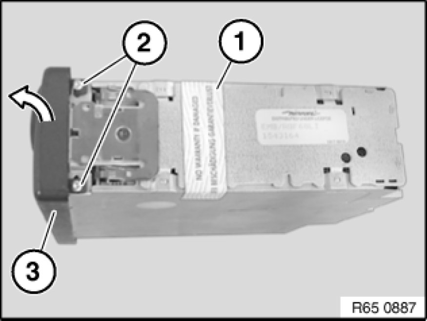
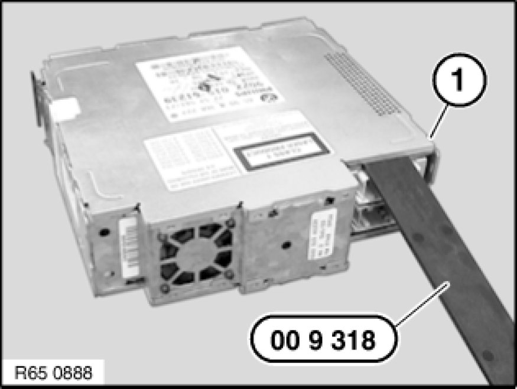
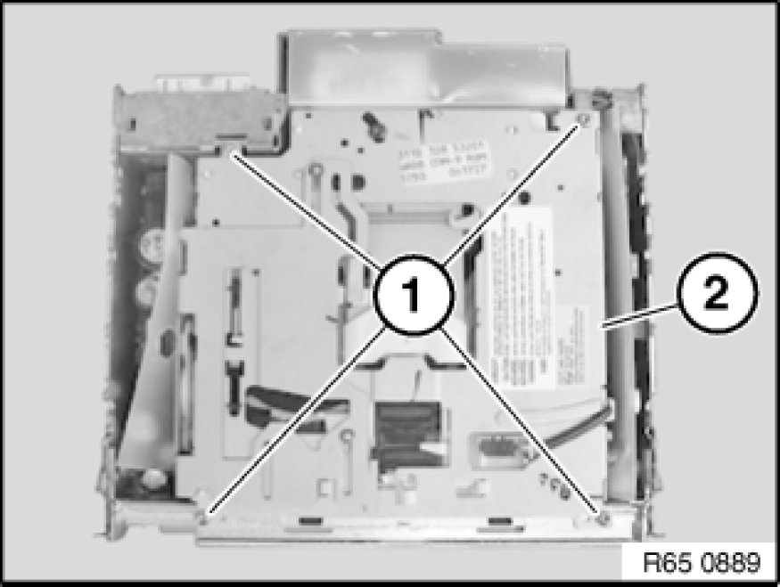
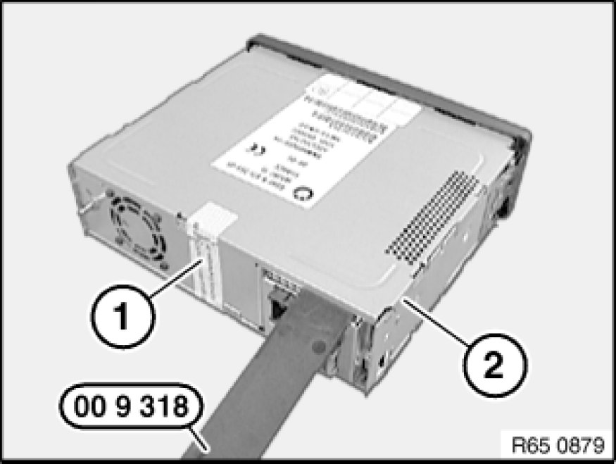
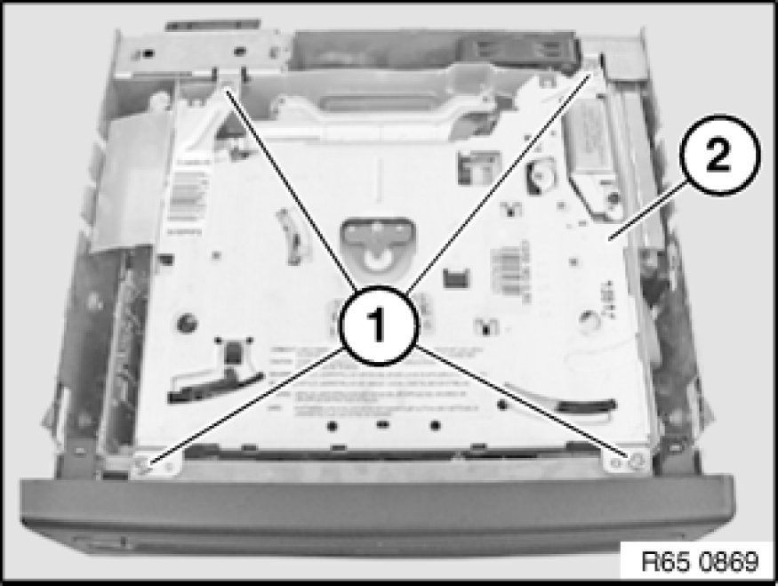
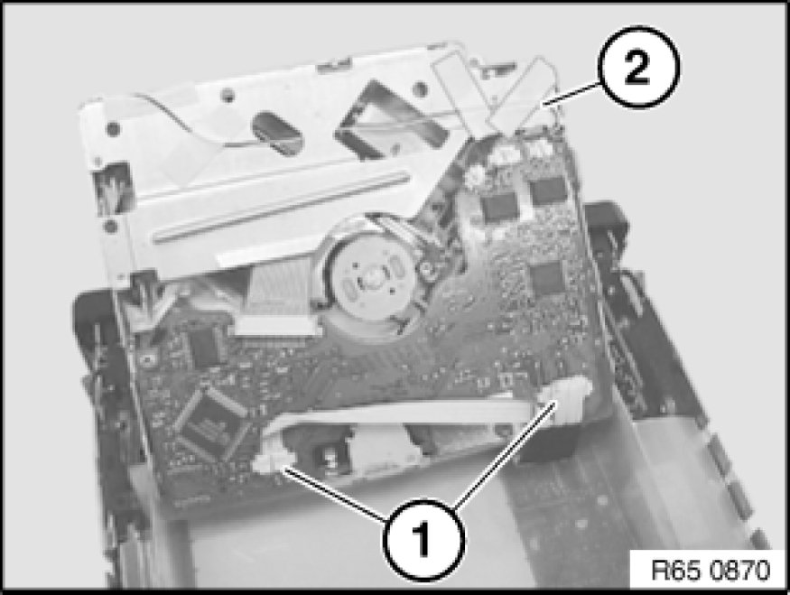
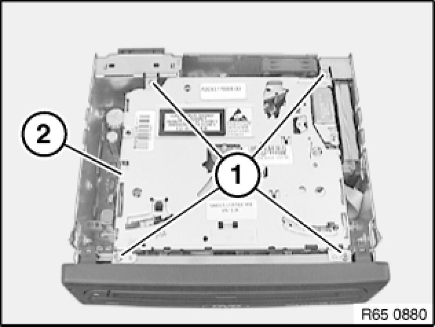
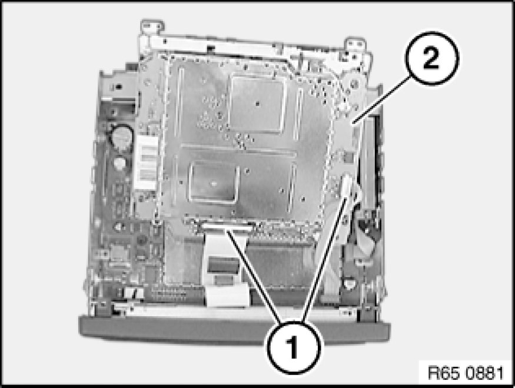

Navigation System: Service and Repair
65 90 550 - Replacing CD/DVD drive for navigation computer

Special tools required:
- 00 9 318 00 9 318 Multipurpose Wedge

Important!
Read and comply with notes on protection against electrostatic damage (ESD protection) 61 35 ... Notes on ESD Protection (Electro Static Discharge)!

Comply with notes and instructions on handling navigation computers Notes on Handling Navigation Computers.
Replace the destroyed seal on all devices with the new seal supplied.

Necessary preliminary tasks:
- Remove navigation computer Removing and Installing/Replacing Navigation Computer with CD-Drive

MK II version:
Cut through seal (1).
Release screws (2) on both sides and carefully fold down front panel (3).
Installation Note:
Replace the destroyed seal with the new seal supplied.

Lever cover (1) with special tool 00 9 318 00 9 318 Multipurpose Wedge upwards out of side catches.

Release screws (1) and carefully lift out CD drive (2).

MK III and MK IV versions:
Cut through seal (1).
Carefully lever off cover (2) with special tool 00 9 318 00 9 318 Multipurpose Wedge.
Installation Note:
Replace the destroyed seal with the new seal supplied.

MK III version:
Release screws (1) and carefully lift out drive (2).

Important!
Ribbon cables and connectors must not be damaged!
Disconnect plug connections (1) and remove drive (2).

MK IV version:
Release screws (1).
Carefully lift out DVD drive (2).

Important!
Ribbon cables and connectors must not be damaged!
Disconnect plug connections (1) and remove DVD drive (2).